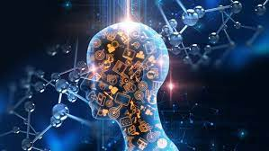

|
|
Usos de la Inteligencia Artificial
- Búsqueda en Internet: Los motores de búsqueda utilizan algoritmos de AI para
mostrar resultados relevantes y personalizados.
- Asistentes Virtuales: Siri, Google Assistant, Alexa y otros asistentes virtuales
utilizan AI para responder preguntas y realizar tareas.
- Reconocimiento de Voz: La AI se usa para convertir la voz en texto y viceversa,
lo que permite la interacción por voz y la transcripción automática.
- Recomendación de Contenido: Plataformas como Netflix y Spotify utilizan AI para
recomendar películas, música y otros contenidos basados en tus preferencias.
- Automatización de Tareas Repetitivas: En la industria, la AI se emplea para
automatizar procesos y tareas repetitivas, como la automatización robótica de procesos
(RPA).
- Medicina: La AI se utiliza en el diagnóstico médico, la interpretación de
imágenes médicas y la predicción de enfermedades.
- Vehículos Autónomos: La AI es esencial en vehículos autónomos como los coches
autónomos de Tesla.
- Seguridad y Detección de Fraudes: La AI se utiliza para analizar patrones y
detectar actividades sospechosas en sistemas de seguridad y transacciones
financieras.
- Traducción Automática: Servicios como Google Translate utilizan AI para traducir
texto entre idiomas.
- Reconocimiento de Patrones: La AI se usa en aplicaciones de visión por computadora
para reconocer objetos, caras y patrones en imágenes y videos.
- Chatbots: Los chatbots utilizan AI para mantener conversaciones con usuarios
y brindar asistencia en línea.
- Juegos: La AI se emplea en juegos de video para controlar personajes no
jugadores (NPC) y mejorar la inteligencia de los oponentes virtuales.
- Predicción del Tiempo: Los modelos de AI se utilizan para predecir el clima
y mejorar la precisión de los pronósticos meteorológicos.
- Aprendizaje Automático: La AI se aplica en una amplia variedad de campos para
desarrollar modelos de aprendizaje automático que pueden prever tendencias y tomar
decisiones basadas en datos.
- Educación Personalizada: La AI se usa en sistemas de educación en línea para
personalizar el aprendizaje y adaptarlo a las necesidades individuales de los
estudiantes.
- Robótica: En la industria, la AI se usa para el control de robots industriales
y la automatización de procesos de fabricación.
- Ciudades Inteligentes: La AI se aplica en el diseño de ciudades inteligentes
para mejorar la gestión del tráfico, la energía y otros recursos.
- Agricultura de Precisión: Los sistemas de AI se utilizan para optimizar la
agricultura, controlando el riego, la fertilización y la cosecha.
- Generación de Contenido: La AI se emplea para generar automáticamente
contenido como noticias, informes financieros y arte.

|